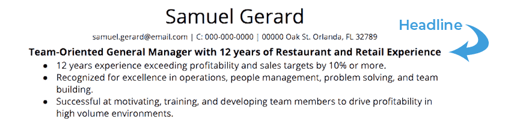

Writing a standout CV headline
A resume headline is a concise, one-line description of who you are as a candidate. A well-written headline can grab a recruiter’s attention and encourage them to take a more detailed look at your qualifications.
Your headline is a short but powerful addition to your resume, often the first thing a recruiter reads. Take advantage of the opportunity to make a strong first impression.
- Include keywords from the job posting, ideally the job title.
- Keep it short. Try to write under ten words.
- Use title case (capitalize the first letter of each word) and adjust your font so the headline stands out visually.
-
Tips for Writing a Resume Headline: 5 Questions to Ask
- Is your headline compatible with the position?
- Does your headline include keywords from the job posting?
- Does your resume headline include concrete language and information?
- Is your headline concise?
- Does your resume headline stand out visually?
Good headlines
- Seasoned Registered Nurse Specializing in Pediatric Care
- Award-Winning Graphic Designer
- Editorial Producer who has Co-Produced 3 Award-Winning Films
- Experienced Merchandiser with CDL License
- Executive Assistant with 6 Years Admin Experience
- Senior Creative Copywriter with Experience Writing Social Ads
- Seasoned Content Writer with SEO Knowledge
- Don’t include an objective in your headline.
- Don’t lie.
- Don’t forget to tailor your headline.